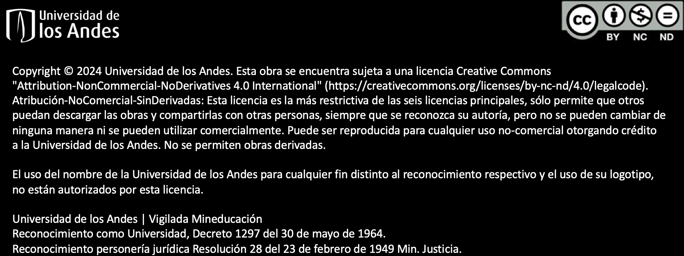

<!DOCTYPE html>
<html lang="en">
  <head>
    <meta charset="utf-8" />
    <meta name="viewport" content="width=device-width, initial-scale=1.0, maximum-scale=1.0, user-scalable=no" />

    <title></title>
    <link rel="stylesheet" href="dist/reveal.css" />
    <link rel="stylesheet" href="dist/theme/black.css" id="theme" />
    <link rel="stylesheet" href="plugin/highlight/monokai.css" />
	<link rel="stylesheet" href="css/layout.css" />
	<link rel="stylesheet" href="plugin/customcontrols/style.css">


    <script defer src="dist/fontawesome/all.min.js"></script>

	<script type="text/javascript">
		var forgetPop = true;
		function onPopState(event) {
			if(forgetPop){
				forgetPop = false;
			} else {
				parent.postMessage(event.target.location.href, "app://obsidian.md");
			}
        }
		window.onpopstate = onPopState;
		window.onmessage = event => {
			if(event.data == "reload"){
				window.document.location.reload();
			}
			forgetPop = true;
		}

		function fitElements(){
			const itemsToFit = document.getElementsByClassName('fitText');
			for (const item in itemsToFit) {
				if (Object.hasOwnProperty.call(itemsToFit, item)) {
					var element = itemsToFit[item];
					fitElement(element,1, 1000);
					element.classList.remove('fitText');
				}
			}
		}

		function fitElement(element, start, end){

			let size = (end + start) / 2;
			element.style.fontSize = `${size}px`;

			if(Math.abs(start - end) < 1){
				while(element.scrollHeight > element.offsetHeight){
					size--;
					element.style.fontSize = `${size}px`;
				}
				return;
			}

			if(element.scrollHeight > element.offsetHeight){
				fitElement(element, start, size);
			} else {
				fitElement(element, size, end);
			}		
		}


		document.onreadystatechange = () => {
			fitElements();
			if (document.readyState === 'complete') {
				if (window.location.href.indexOf("?export") != -1){
					parent.postMessage(event.target.location.href, "app://obsidian.md");
				}
				if (window.location.href.indexOf("print-pdf") != -1){
					let stateCheck = setInterval(() => {
						clearInterval(stateCheck);
						window.print();
					}, 250);
				}
			}
	};


        </script>
  </head>
  <body>
    <div class="reveal">
      <div class="slides"><section  data-markdown><script type="text/template"><!-- .slide: class="has-dark-background drop" data-background-color="#2E3440" -->
<div class="" style="position: absolute; left: 0px; top: 0px; height: 700px; width: 960px; min-height: 700px; display: flex; flex-direction: column; align-items: center; justify-content: center" absolute="true">

### Introducción a la Programación (IP)

**Funciones de Python  
(matemáticas y de entrada-salida)**

[Eduardo Rosales](mailto:ee.rosales24@uniandes.edu.co)

Departamento de Ingeniería de Sistemas y Computación

Universidad de los Andes
</div></script></section><section  data-markdown><script type="text/template"><!-- .slide: class="has-dark-background drop" data-background-color="#2E3440" -->
<div class="" style="position: absolute; left: 0px; top: 0px; height: 700px; width: 960px; min-height: 700px; display: flex; flex-direction: column; align-items: center; justify-content: center" absolute="true">

### Función en Matemáticas

Una *función en matemáticas* se expresa como:

`$f(x) = x^2$`

- Toma un valor `x` como entrada
- Realiza una serie de operaciones
- Devuelve un valor como salida
- Es como una **caja negra** 
    - Que recibe un valor y devuelve otro

$ 	ext{Entrada (x)} 
ightarrow f(x) 
ightarrow 	ext{Salida (y)} $
</div></script></section><section  data-markdown><script type="text/template"><!-- .slide: class="has-dark-background drop" data-background-color="#2E3440" -->
<div class="" style="position: absolute; left: 0px; top: 0px; height: 700px; width: 960px; min-height: 700px; display: flex; flex-direction: column; align-items: center; justify-content: center" absolute="true">

### Función en Python

- Bloque de código reutilizable con nombre
    - Diseñado para una **tarea específica**
    - Puede recibir datos de entrada
    - Puede producir un efecto 
        - Ej. Reproducir una canción
    - O puede devolver resultados
        - Ej. Un promedio
</div></script></section><section  data-markdown><script type="text/template"><!-- .slide: class="has-dark-background drop" data-background-color="#2E3440" -->
<div class="" style="position: absolute; left: 0px; top: 0px; height: 700px; width: 960px; min-height: 700px; display: flex; flex-direction: column; align-items: center; justify-content: center" absolute="true">

# ¿Por Qué Necesitamos Funciones?
</div></script></section><section  data-markdown><script type="text/template"><!-- .slide: class="has-dark-background drop" data-background-color="#2E3440" -->
<div class="" style="position: absolute; left: 0px; top: 0px; height: 700px; width: 960px; min-height: 700px; display: flex; flex-direction: column; align-items: center; justify-content: center" absolute="true">

## Utilidad de las Funciones (I)

### Reusabilidad

- Crear **una vez**
    - Usar **muchas veces**
- Evitar la duplicación de código
- Reducir el riesgo de errores 
    - En múltiples ubicaciones
</div></script></section><section  data-markdown><script type="text/template"><!-- .slide: class="has-dark-background drop" data-background-color="#2E3440" -->
<div class="" style="position: absolute; left: 0px; top: 0px; height: 700px; width: 960px; min-height: 700px; display: flex; flex-direction: column; align-items: center; justify-content: center" absolute="true">

## Utilidad de las funciones (II)
### Modularidad/Encapsulamiento

- Desglosar problemas grandes en piezas (partes)
    - Basadas en funciones


</div></script></section><section  data-markdown><script type="text/template"><!-- .slide: class="has-dark-background drop" data-background-color="#2E3440" -->
<div class="" style="position: absolute; left: 0px; top: 0px; height: 700px; width: 960px; min-height: 700px; display: flex; flex-direction: column; align-items: center; justify-content: center" absolute="true">

## Utilidad de las funciones (III)
### Aislamiento

- Facilitar la prueba y depuración de bloques de código aislados

### Legibilidad

- Mejorar la legibilidad del código
</div></script></section><section  data-markdown><script type="text/template"><!-- .slide: class="has-dark-background drop" data-background-color="#2E3440" -->
<div class="" style="position: absolute; left: 0px; top: 0px; height: 700px; width: 960px; min-height: 700px; display: flex; flex-direction: column; align-items: center; justify-content: center" absolute="true">

# ¿Qué Tipos de Funciones Hay en Python?
</div></script></section><section  data-markdown><script type="text/template"><!-- .slide: class="has-dark-background drop" data-background-color="#2E3440" -->
<div class="" style="position: absolute; left: 0px; top: 0px; height: 700px; width: 960px; min-height: 700px; display: flex; flex-direction: column; align-items: center; justify-content: center" absolute="true">

## Función Integrada 
#### (built-in function)

- Predefinida en Python
- No es necesario definirla para usarla
- Hace parte de la librería de Python
    - Contiene funciones de uso común
- Ej: `type()`, `int()`, `float()`, `str()`
</div></script></section><section  data-markdown><script type="text/template"><!-- .slide: class="has-dark-background drop" data-background-color="#2E3440" -->
<div class="" style="position: absolute; left: 0px; top: 0px; height: 700px; width: 960px; min-height: 700px; display: flex; flex-direction: column; align-items: center; justify-content: center" absolute="true">

## Función Definida por el Usuario  
#### (user-defined function)

- Definida por los programadores
- Información adicional después en el curso...
</div></script></section><section  data-markdown><script type="text/template"><!-- .slide: class="has-dark-background drop" data-background-color="#2E3440" -->
<div class="" style="position: absolute; left: 0px; top: 0px; height: 700px; width: 960px; min-height: 700px; display: flex; flex-direction: column; align-items: center; justify-content: center" absolute="true">

# Veamos Ejemplos de Funciones Integradas de Uso Común
</div></script></section><section  data-markdown><script type="text/template"><!-- .slide: class="has-dark-background drop" data-background-color="#2E3440" -->
<div class="" style="position: absolute; left: 0px; top: 0px; height: 700px; width: 960px; min-height: 700px; display: flex; flex-direction: column; align-items: center; justify-content: center" absolute="true">

### `help()`

- Proporciona información de ayuda de objetos, módulos, funciones, etc.
- Sintaxis: `help(objeto)`
    - `objeto`: puede ser un objeto, módulo, función, método, etc.

- Retorna la documentación relevante si está disponible

- Documentación en línea: [**`help()`**](https://docs.python.org/3/library/functions.html#help)
</div></script></section><section  data-markdown><script type="text/template"><!-- .slide: class="has-dark-background drop" data-background-color="#2E3440" -->
<div class="" style="position: absolute; left: 0px; top: 0px; height: 700px; width: 960px; min-height: 700px; display: flex; flex-direction: column; align-items: center; justify-content: center" absolute="true">

### `help()` - Ejemplos de uso

```python
help(type) # → Muestra la ayuda de la función type(...)
```

```python
help(int) # → Muestra la ayuda de la función int(...)
```

```python
help(float) # → Muestra la ayuda de la función float(...)
```

```python
help(str) # → Muestra la ayuda de la función str(...)
```

```python
help() # → Modo de ayuda interactivo, escribe 'quit' para salir
```
</div></script></section><section  data-markdown><script type="text/template"><!-- .slide: class="has-dark-background drop" data-background-color="#2E3440" -->
<div class="" style="position: absolute; left: 0px; top: 0px; height: 700px; width: 960px; min-height: 700px; display: flex; flex-direction: column; align-items: center; justify-content: center" absolute="true">

### `abs()`

- Devuelve el valor absoluto de un número
- Sintaxis: `abs(numero)`
    - `numero`: Un número entero o decimal
- `help(abs)` ó [**`abs()`**](https://docs.python.org/3/library/functions.html#abs) para más información

- Ejemplos:
```Python
abs(0)  # → 0
abs(5)  # → 5
abs(-5)   # → 5
abs(2.3)  # → 2.3
abs(-2.3)  # → 2.3
```
</div></script></section><section  data-markdown><script type="text/template"><!-- .slide: class="has-dark-background drop" data-background-color="#2E3440" -->
<div class="" style="position: absolute; left: 0px; top: 0px; height: 700px; width: 960px; min-height: 700px; display: flex; flex-direction: column; align-items: center; justify-content: center" absolute="true">

### `round()`

- Redondea un número a un número específico de decimales

- Sintaxis: `round(numero[, ndigits])`  
    - `# [] significa: opcional`
  - `numero`: Un número flotante
  - `ndigits` (opcional): Número de decimales a los que redondear
    - Si se omite, se redondea al entero más cercano
- `help(round)`  ó [**`round()`**](https://docs.python.org/3/library/functions.html#round) para más información
</div></script></section><section  data-markdown><script type="text/template"><!-- .slide: class="has-dark-background drop" data-background-color="#2E3440" -->
<div class="" style="position: absolute; left: 0px; top: 0px; height: 700px; width: 960px; min-height: 700px; display: flex; flex-direction: column; align-items: center; justify-content: center" absolute="true">

### `round()` - Ejemplos

- Redondea un número a un número específico de decimales

- Ejemplos:

```python
  1 / 3  # → 0.3333333333333333 (no redondeado)
  round(1/3)  # → 0 (redondea al entero más cercano)
  round(1/3, 2)  # → 0.33 (redondea a dos posiciones decimales)
```
</div></script></section><section  data-markdown><script type="text/template"><!-- .slide: class="has-dark-background drop" data-background-color="#2E3440" -->
<div class="" style="position: absolute; left: 0px; top: 0px; height: 700px; width: 960px; min-height: 700px; display: flex; flex-direction: column; align-items: center; justify-content: center" absolute="true">

### `min()`

- Devuelve el elemento menor 
    - De dos o más argumentos

- Sintaxis: `min(arg1, arg2, *args[, key])`
    - `# [] significa:  opcional`

- `arg1, arg2, *args`: Valores para comparar

- `key` (opcional): 
    - Una función de un argumento 
        - Para personalizar la comparación

- `help(min)` ó [ **`min()`**](https://docs.python.org/3/library/functions.html#min) para más información
</div></script></section><section  data-markdown><script type="text/template"><!-- .slide: class="has-dark-background drop" data-background-color="#2E3440" -->
<div class="" style="position: absolute; left: 0px; top: 0px; height: 700px; width: 960px; min-height: 700px; display: flex; flex-direction: column; align-items: center; justify-content: center" absolute="true">

### `min()` - Ejemplos

```Python
min(1, 2, 3)  # → 1

min(-3, -2, -1, 0, 1, 2, 3)  # → -3
```
</div></script></section><section  data-markdown><script type="text/template"><!-- .slide: class="has-dark-background drop" data-background-color="#2E3440" -->
<div class="" style="position: absolute; left: 0px; top: 0px; height: 700px; width: 960px; min-height: 700px; display: flex; flex-direction: column; align-items: center; justify-content: center" absolute="true">

### `max()`

- Devuelve el elemento mayor 
    - De dos o más argumentos

- Sintaxis: `max(arg1, arg2, *args[, key])`
    - `# [] significa:  opcional`

- `arg1, arg2, *args`: Valores para comparar

- `key` (opcional): Una función de un argumento 
    - Para personalizar la comparación

- `help(max)` ó [ **`max()`**](https://docs.python.org/3/library/functions.html#max) para más información
</div></script></section><section  data-markdown><script type="text/template"><!-- .slide: class="has-dark-background drop" data-background-color="#2E3440" -->
<div class="" style="position: absolute; left: 0px; top: 0px; height: 700px; width: 960px; min-height: 700px; display: flex; flex-direction: column; align-items: center; justify-content: center" absolute="true">

### `max()` - Ejemplos

```Python
max(1, 2, 3)  # → 3

max(-3, -2, -1, 0, 1, 2, 3)  # → 3
```
</div></script></section><section  data-markdown><script type="text/template"><!-- .slide: class="has-dark-background drop" data-background-color="#2E3440" -->
<div class="" style="position: absolute; left: 0px; top: 0px; height: 700px; width: 960px; min-height: 700px; display: flex; flex-direction: column; align-items: center; justify-content: center" absolute="true">

### `pow()`

- Calcula la potencia de un número
	- Equivalente a base elevado al exponente

- Sintaxis: `pow(base, exp[, modulo])`
- `base`: Número base de la potencia
- `exp`: Exponente al que se eleva la base

- `modulo` (opcional): Si se proporciona, 
	- retorna: `((base ** exp) % modulo)`

- `help(pow)`ó [ **`pow()`**](https://docs.python.org/3/library/functions.html#pow) para más información
</div></script></section><section  data-markdown><script type="text/template"><!-- .slide: class="has-dark-background drop" data-background-color="#2E3440" -->
<div class="" style="position: absolute; left: 0px; top: 0px; height: 700px; width: 960px; min-height: 700px; display: flex; flex-direction: column; align-items: center; justify-content: center" absolute="true">

### `pow()` - Ejemplos

```
Python

pow(2, 3)  # → 8 (2 elevado a 3)

pow(4, 0.5)  # → 2.0 (raíz cuadrada de 4)

pow(7, -1) 
# → 0.14285714285714285 
# (1 dividido por 7)

pow(2, 3, 3) 
# → 2
# (2 al cubo y luego: 8 mod 3 = 2)`
```
</div></script></section><section  data-markdown><script type="text/template"><!-- .slide: class="has-dark-background drop" data-background-color="#2E3440" -->
<div class="" style="position: absolute; left: 0px; top: 0px; height: 700px; width: 960px; min-height: 700px; display: flex; flex-direction: column; align-items: center; justify-content: center" absolute="true">

### Expresión (repaso)
-   Sintaxis *evaluable* que produce un valor
-   Se compone de 
	- Un elemento único
	- Ó una combinación de 
		- Valores
		- Variables
		- Operadores, etc.
-   Ej:

```Python
2  # → 2 (un valor)

100 - 30 / (7 - 6)  
# → 70.0 (valores y operadores)
```
</div></script></section><section  data-markdown><script type="text/template"><!-- .slide: class="has-dark-background drop" data-background-color="#2E3440" -->
<div class="" style="position: absolute; left: 0px; top: 0px; height: 700px; width: 960px; min-height: 700px; display: flex; flex-direction: column; align-items: center; justify-content: center" absolute="true">

### Funciones y Expresiones

- Las funciones pueden ser parte de expresiones
	- Cuando retornan un valor
- Ejemplos:

```Python
100 + min(50, 100)  # → 150

abs(-100) + max(50, 100)  # → 200

round(4.5012, 2) + round(4.0023, 2)  # → 8.5

pow(2, 2) - pow(1, 2)  # → 3
```
</div></script></section><section  data-markdown><script type="text/template"><!-- .slide: class="has-dark-background drop" data-background-color="#2E3440" -->
<div class="" style="position: absolute; left: 0px; top: 0px; height: 700px; width: 960px; min-height: 700px; display: flex; flex-direction: column; align-items: center; justify-content: center" absolute="true">

### Encadenamiento de Funciones

- Ejecutar múltiples funciones en secuencia

- Mejora la modularidad
  - Aumenta la legibilidad

- La salida de una función → Entrada de otra función
  - Todo en una sola línea

- Los tipos deben ser compatibles entre funciones

- El orden del encadenamiento es clave
```python
result = function1(function2(function3(data)))`
```
</div></script></section><section  data-markdown><script type="text/template"><!-- .slide: class="has-dark-background drop" data-background-color="#2E3440" -->
<div class="" style="position: absolute; left: 0px; top: 0px; height: 700px; width: 960px; min-height: 700px; display: flex; flex-direction: column; align-items: center; justify-content: center" absolute="true">

### Encadenamiento de Funciones - Ejemplos

```Python
# Mayor entre abs(-10) y pow(3, 2) 
max(abs(-10), pow(3, 2))  # → 10

# Mínimo entre 2y abs(-9)
min(pow(2, 3), abs(-9))  # → 8

# Tipo de str(abs(-50) + 25)
type(str(abs(-50) + 25))  # → <class 'str'>

# Conversión a float y redondeo a dos cifras
round(float(5 / 3), 2)  # → 1.67

# Abs de int(-15.6)
abs(int(-15.6))  # → 15
```
</div></script></section><section  data-markdown><script type="text/template"><!-- .slide: class="has-dark-background drop" data-background-color="#2E3440" -->
<div class="" style="position: absolute; left: 0px; top: 0px; height: 700px; width: 960px; min-height: 700px; display: flex; flex-direction: column; align-items: center; justify-content: center" absolute="true">

# Función de Entrada en Python
</div></script></section><section  data-markdown><script type="text/template"><!-- .slide: class="has-dark-background drop" data-background-color="#2E3440" -->
<div class="" style="position: absolute; left: 0px; top: 0px; height: 700px; width: 960px; min-height: 700px; display: flex; flex-direction: column; align-items: center; justify-content: center" absolute="true">

### `input(...)`

- Recolecta datos de entrada del usuario
- Sintaxis: `input(prompt)`
	- `prompt`: Mensaje mostrado (sin salto de línea al final)
- Retorna un  string
- **Nota:*** Usar siempre conversión de tipos 
	- Para obtener entrada numérica
- `help(input)`ó [**`input`**](https://docs.python.org/3/library/functions.html#input)  para más información`
</div></script></section><section  data-markdown><script type="text/template"><!-- .slide: class="has-dark-background drop" data-background-color="#2E3440" -->
<div class="" style="position: absolute; left: 0px; top: 0px; height: 700px; width: 960px; min-height: 700px; display: flex; flex-direction: column; align-items: center; justify-content: center" absolute="true">

### `input(...)` - Ejemplos

```Python
# Solicita al usuario su nombre
nombre = input('Digite su nombre: ')

# Solicita la edad del usuario y la convierte a entero
edad = int(input('Digite su edad: '))

# Solicita la altura del usuario y la convierte a flotante
altura = float(input('Digite su altura: '))

```
</div></script></section><section  data-markdown><script type="text/template"><!-- .slide: class="has-dark-background drop" data-background-color="#2E3440" -->
<div class="" style="position: absolute; left: 0px; top: 0px; height: 700px; width: 960px; min-height: 700px; display: flex; flex-direction: column; align-items: center; justify-content: center" absolute="true">

# Función de Salida en Python
</div></script></section><section  data-markdown><script type="text/template"><!-- .slide: class="has-dark-background drop" data-background-color="#2E3440" -->
<div class="" style="position: absolute; left: 0px; top: 0px; height: 700px; width: 960px; min-height: 700px; display: flex; flex-direction: column; align-items: center; justify-content: center" absolute="true">

### `print(...)`

- Muestra información en la consola

- Sintaxis: `print(*objects, sep=' ', end='\n', ...)`
  - `elementos`: Elementos a imprimir
  - `sep`: Separador entre elementos (por defecto, espacio)
  - `end`: Carácter al final de la línea (por defecto, nueva línea)
- `help(print)` ó [**`print()`**](https://docs.python.org/3/library/functions.html#print) para más información
</div></script></section><section  data-markdown><script type="text/template"><!-- .slide: class="has-dark-background drop" data-background-color="#2E3440" -->
<div class="" style="position: absolute; left: 0px; top: 0px; height: 700px; width: 960px; min-height: 700px; display: flex; flex-direction: column; align-items: center; justify-content: center" absolute="true">

### `print(...)`

- Muestra información en la consola
	- Útil para mostrar 
		- Resultados
		- Mensajes de error (depurar)

- Ejemplos:
  ```python
  print('Hola, mundo!')  # → Hola, mundo!
  
  print('Nombre:', 'Isaac Newton')  
  # → Nombre: Isaac Newton
  ```
</div></script></section><section  data-markdown><script type="text/template"><!-- .slide: class="has-dark-background drop" data-background-color="#2E3440" -->
<div class="" style="position: absolute; left: 0px; top: 0px; height: 700px; width: 960px; min-height: 700px; display: flex; flex-direction: column; align-items: center; justify-content: center" absolute="true">

### Constantes

- Valores que no cambian durante la ejecución del programa
- Usadas para valores fijos, como tasas, configuraciones, etc.
- Declaración:
	- No hay un tipo 'constante' en Python
	- Se usan variables normales

- Convención:
	- Nombres en mayúsculas por convención
</div></script></section><section  data-markdown><script type="text/template"><!-- .slide: class="has-dark-background drop" data-background-color="#2E3440" -->
<div class="" style="position: absolute; left: 0px; top: 0px; height: 700px; width: 960px; min-height: 700px; display: flex; flex-direction: column; align-items: center; justify-content: center" absolute="true">

### Constantes - Ejemplos

```Python
PI = 3.14
TASA_FIJA = 0.08
```
</div></script></section><section  data-markdown><script type="text/template"><!-- .slide: class="has-dark-background drop" data-background-color="#2E3440" -->
<div class="" style="position: absolute; left: 0px; top: 0px; height: 700px; width: 960px; min-height: 700px; display: flex; flex-direction: column; align-items: center; justify-content: center" absolute="true">

### Quiz (I)

Escriba un programa que solicite al usuario ingresar el precio de un producto y realice las siguientes operaciones:

- Calcule el costo de envío como el **10%** del precio del producto

- Aplique un impuesto de venta del **7%** al total de la compra, incluyendo el costo de envío

- Muestre el resultado final redondeado a dos decimales

- El mensaje final debe ser:
```Python
"El total de su compra, 
incluyendo el costo de envío y los impuestos, 
es: $X pesos."
```
</div></script></section><section  data-markdown><script type="text/template"><!-- .slide: class="has-dark-background drop" data-background-color="#2E3440" -->
<div class="" style="position: absolute; left: 0px; top: 0px; height: 700px; width: 960px; min-height: 700px; display: flex; flex-direction: column; align-items: center; justify-content: center" absolute="true">

### Quiz (I) - Solución

- Nota: Deslice para ver el código completo

```Python
# Impuesto de venta
TASA_IMPUESTO = 0.07
# Precio del producto
precio_producto = float(input('Ingrese el precio del producto: '))
# Costo de envío (10%)
costo_envio = precio_producto * 0.10
# Precio total con envío e impuesto
precio_total = (precio_producto + costo_envio) * (1 + TASA_IMPUESTO)
# Redondear a dos decimales
precio_total = round(precio_total, 2)
# Mensaje final
mensaje = "El total de su compra, incluyendo el costo de envío y los impuestos, es: $" + str(precio_total) + " pesos."
print(mensaje)
```
</div></script></section><section  data-markdown><script type="text/template"><!-- .slide: class="has-dark-background drop" data-background-color="#2E3440" -->
<div class="" style="position: absolute; left: 0px; top: 0px; height: 700px; width: 960px; min-height: 700px; display: flex; flex-direction: column; align-items: center; justify-content: center" absolute="true">

### ¿Preguntas?

</div></script></section><section  data-markdown><script type="text/template"><!-- .slide: class="has-dark-background drop" data-background-color="#2E3440" -->
<div class="" style="position: absolute; left: 0px; top: 0px; height: 700px; width: 960px; min-height: 700px; display: flex; flex-direction: column; align-items: center; justify-content: center" absolute="true">


</div></script></section></div>
    </div>

    <script src="dist/reveal.js"></script>

    <script src="plugin/markdown/markdown.js"></script>
    <script src="plugin/highlight/highlight.js"></script>
    <script src="plugin/zoom/zoom.js"></script>
    <script src="plugin/notes/notes.js"></script>
    <script src="plugin/math/math.js"></script>
	<script src="plugin/mermaid/mermaid.js"></script>
	<script src="plugin/chart/chart.min.js"></script>
	<script src="plugin/chart/plugin.js"></script>
	<script src="plugin/customcontrols/plugin.js"></script>

    <script>
      function extend() {
        var target = {};
        for (var i = 0; i < arguments.length; i++) {
          var source = arguments[i];
          for (var key in source) {
            if (source.hasOwnProperty(key)) {
              target[key] = source[key];
            }
          }
        }
        return target;
      }

	  function isLight(color) {
		let hex = color.replace('#', '');

		// convert #fff => #ffffff
		if(hex.length == 3){
			hex = `${hex[0]}${hex[0]}${hex[1]}${hex[1]}${hex[2]}${hex[2]}`;
		}

		const c_r = parseInt(hex.substr(0, 2), 16);
		const c_g = parseInt(hex.substr(2, 2), 16);
		const c_b = parseInt(hex.substr(4, 2), 16);
		const brightness = ((c_r * 299) + (c_g * 587) + (c_b * 114)) / 1000;
		return brightness > 155;
	}

	var bgColor = getComputedStyle(document.documentElement).getPropertyValue('--r-background-color').trim();
	var isLight = isLight(bgColor);

	if(isLight){
		document.body.classList.add('has-light-background');
	} else {
		document.body.classList.add('has-dark-background');
	}

      // default options to init reveal.js
      var defaultOptions = {
        controls: true,
        progress: true,
        history: true,
        center: true,
        transition: 'default', // none/fade/slide/convex/concave/zoom
        plugins: [
          RevealMarkdown,
          RevealHighlight,
          RevealZoom,
          RevealNotes,
          RevealMath.MathJax3,
		  RevealMermaid,
		  RevealChart,
		  RevealCustomControls,
        ],


    	allottedTime: 120 * 1000,

		mathjax3: {
			mathjax: 'plugin/math/mathjax/tex-mml-chtml.js',
		},
		markdown: {
		  gfm: true,
		  mangle: true,
		  pedantic: false,
		  smartLists: false,
		  smartypants: false,
		},

		mermaid: {
			theme: isLight ? 'default' : 'dark',
		},

		customcontrols: {
			controls: [
			]
		},
      };

      // options from URL query string
      var queryOptions = Reveal().getQueryHash() || {};

      var options = extend(defaultOptions, {"width":960,"height":700,"margin":0.04,"controls":true,"progress":true,"slideNumber":false,"transition":"slide","transitionSpeed":"default"}, queryOptions);
    </script>

    <script>
      Reveal.initialize(options);
    </script>
  </body>

  <!-- created with Advanced Slides -->
</html>
